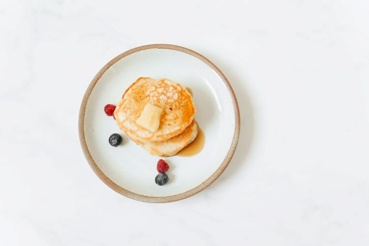

Pancakes are one of the delicious foods that we eat in our breakfasts.
Having some trouble in creating a perfect pancake? Prepare your ingredients and let's get started!
Ingredients and Tools:
- 1 box of pancake mix
- measuring cup
- 1/2 tsp salt
- butter
- bowl
- nonstick pan
Steps:
- Pour the pancake mix into the bowl.
- Slowly add the water into the pancake mix.
- Heat your nonstick pan.
- Melt the butter on the pan.
- Pour the pancake batter onto the pan using a measuring cup.
- Wait until the bubbles begin to form on the edges and in the center of the pancake.
- If bubbles formed, flip the pancake.
- Wait for the pancakes to be golden brown.
- Serve warm and enjoy!
Want to learn more recipes?
We have other food recipes that you might like!